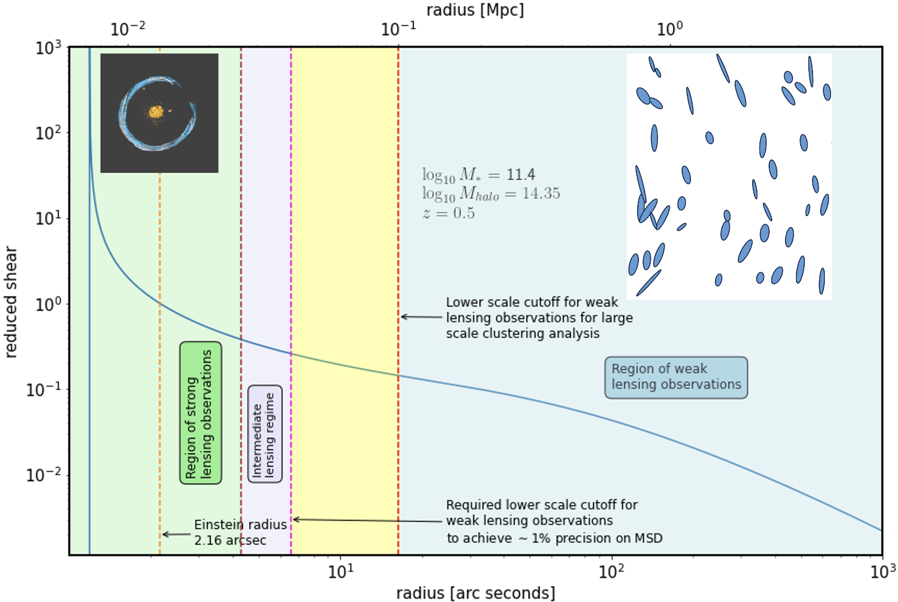

Research
Strong gravitational lensing · Cosmology · Rubin Observatory
Science questions
I use astrophysical observations to address fundamental questions about the Universe:
- How can independent cosmological probes improve measurements of the Hubble constant and the expansion history of the Universe?
- How can strong and weak gravitational lensing be combined to reduce systematic uncertainties in time-delay cosmography?
- What can gravitational lensing reveal about the distribution of dark matter in galaxies and clusters?
- How can quasars and gamma-ray bursts extend cosmological distance measurements to the high-redshift Universe?
Methodology
- Strong gravitational lensing and time-delay cosmography
- Galaxy-galaxy weak gravitational lensing
- Population simulations and forward modeling
- Statistical inference and cosmological parameter estimation
- Machine learning for strong-lens discovery and classification
- Scientific software and analysis-pipeline development
- Quasars and gamma-ray bursts as high-redshift cosmological probes
Below are the main research topics I work on, spanning strong-lensing cosmography, Rubin Observatory science, and high-redshift cosmology.

Research topics
Strong-lensing cosmography and the mass-sheet degeneracy
Strong gravitational lensing offers a way to measure cosmological distances that is independent of several commonly used cosmological probes. In particular, time delays between multiple images of strongly lensed quasars and supernovae can be used to infer the time-delay distance and constrain the Hubble constant (H0). I am interested in developing this technique into a precise and robust probe of the expansion history of the Universe.
A central limitation is the mass-sheet degeneracy (MSD): different lens mass distributions can reproduce the same strong-lensing observables while implying different time-delay distances. I investigate how galaxy-galaxy weak lensing can provide complementary information about the mass distribution beyond the Einstein radius and help constrain this degeneracy. One part of this work is to identify non-lens galaxies that match the properties and environments of strong-lens galaxies. Their stacked weak-lensing profiles can then be used to infer the population-level mass distribution and inform strong-lens mass models.
This approach connects strong-lensing measurements on small physical scales with weak-lensing information at larger radii. It offers a route to controlling an important systematic in time-delay cosmography and improving the reliability of cosmological constraints.
Preparing strong-lensing science for the Rubin Observatory
The Vera C. Rubin Observatory's Legacy Survey of Space and Time (LSST) will repeatedly image a large fraction of the southern sky, creating an exceptional data set for discovering variable and multiply imaged sources. The expected discovery of large samples of lensed quasars and supernovae will open new opportunities for time-delay cosmography, studies of dark matter, and the characterization of lens-galaxy populations.
I contribute to strong-lens discovery and characterization within the LSST Dark Energy Science Collaboration (LSST-DESC) and the LSST Strong Lensing Science Collaboration (LSST-SLSC). My work includes developing simulated lens populations and images, supporting the development and validation of lens-finding methods, and building analysis pipelines for Rubin-era studies. I am also involved in Rubin Observatory observing operations, which gives me direct experience with the observational processes that produce the survey data.
I led the development of SLSim, an open-source Python package for simulating realistic strong-lens populations, including galaxy-galaxy lenses, lensed quasars, lensed supernovae, and cluster lenses. SLSim supports the generation of realistic populations and images for the development, training, and validation of strong-lens discovery and characterization methods. These simulations help prepare the community to identify and study the strong-lensing systems that Rubin will discover.
Add a link to the SLSim repository and its publication here when you finalize the page.
High-redshift cosmology with quasars and gamma-ray bursts
My Ph.D. research at Kansas State University focused on using quasars and gamma-ray bursts (GRBs) as cosmological probes. I studied the nonlinear relation between quasar X-ray and ultraviolet luminosities and its application to constructing a quasar Hubble diagram. Because quasars can be observed at substantially higher redshifts than Type Ia supernovae, this relation offers a possible way to extend cosmological distance measurements to earlier epochs of cosmic history.
I also investigated cosmological constraints from reverberation-mapped quasars and GRBs in combination with baryon acoustic oscillation (BAO) measurements and direct measurements of the Hubble parameter, H(z). This work explored the potential of these astrophysical probes to extend distance measurements to redshifts approaching z ∼ 8 and to test cosmological models over a broader redshift range.
Recorded talks
I give research talks on gravitational lensing, time-delay cosmography, Rubin-era strong-lensing science, and observational cosmology. Add links to selected seminar recordings or conference presentations below as they become available.
- Add talk title, host/institution, date, and recording link.
- Add a second selected presentation if useful.
Selected publications and software
For a complete and up-to-date list of publications, see my NASA ADS profile. My research software includes SLSim, developed to simulate strong-lens populations and images for Rubin-era discovery and analysis.